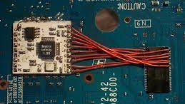

CHIP METHOD
It is the most complicated and complex way to release the console as you run the risk of damaging the console, as if it is in the Fat models of the ps2 having to remove the case had to be careful with the flex cables of the reader and power buttons, then remove the entire reader, remove the heatsink and get to the motherboard of the console where to put the chip.apart from a bad weld or in a place that does not touch could cause a short circuit that left the ps2 unusable.
